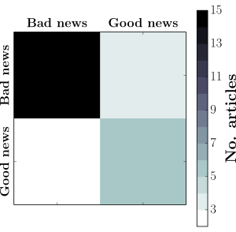

I'm assessing machine learning for classifying the sentiment of articles in business sections of news websites. The machine learning libraries quite effectively classify the sentiment of the articles and it's likely that will improve to a useful accuracy if given a few times larger training sample.
Skills employed: Machine learning, Python, scikit-learn, matplotlib, numpy, nltk, web scraping, data cleaning, Matplotlib, project design, Linux

Results of a machine learning test. The top axis is the actual sentiment of the test sample, the left axis is the classification from the machine learning.
A database of news articles would perhaps be a powerful tool, and would be made even more useful if there was some automated sentiment analysis with the articles. This seems like it should be a tractable problem, given there are words in English that communicate sentiment - debt', 'depression', 'FCA', for instance.
I was also wondering how to invest my own money, and wondered if I could build a tool that would beat the standard investment strategies. (It's a theoretical physicist thing - we all think we can beat the stock market.) It's also for developing my own skills, data scientist jobs ads often like machine learning experience.
For the test data, I choose 99 articles from the business sections of news websites, classifying them as either 'good news' or 'bad news'. 99 articles is quite a small sample, but it's enough for this proof of principle. Just two categories, 'good news' or 'bad news', is quite simple and can be quite subjective – if there was doubt, I tried to think in terms of the shareholders.
The classifier always predicted the 'bad news' well, but inconsistently predicted the 'good news'. This is similar to the comparison tutorial – at the same sample size, it reliably predicted the classification of one type of data but not the other. This was probably due to the weightings assigned to vocabulary by the classifier for 'bad news' being clearer – words like 'debt', 'FCA', 'charges' and 'cost' often occurred in bad news story – the vocabulary for 'good news' wasn't as clear.
scikits learn comes built in with the Rotten Tomatoes database, which contains several thousand entries, each labelled with a sentiment. For similar dataset sizes, the comparison database predicted the sentiment with similar accuracy, and the accuracy increased until around 2,000 articles. This is encouraging for the extension of this project to larger sample sizes.
The main issue with this test was the sample size – 99 articles is too few. The tutorial I compared to scaled well with increasing sample size, so it does give hope that this will also improve. The classifier here improved from 50 samples to 99 samples, and should do so again. More articles will also allow comparisons of more sophisticated classifiers, beyond the basic linear classifier used here.
The second issue was concerning turning this into a useful too. I didn't really know anything about data science when I set out, and the code would be challenging to extend (often it was the first solution that came to mind). If I redid it, I'd do my web scraping using tools designed for that, not Python string comprehension, and use document databases as the store. And probably other things differently, but those are the obvious ones.